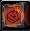
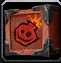
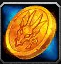
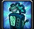

The Standard Raid Build
Standard Raid Build |
Learn the best Frost Mage raid build for The War Within Season 1 patch 11.1.0. This guide will have details on how to optimally play Frost Mage in raid encounters specific Liberation of Undermine.
Vexie and the Geargrinders
AoE Build |
Vexie and the Geargrinders Build |
Vexie and the Geargrinders has a few adds but since they are relatively easy to handle, trying to kill the boss as fast as possible especially in the burn phases should be your main goal.
Cauldron of Carnage
Cauldron of Carnage Build |
This fight alternates between a single target phase and a two target phase. Due to
 Splitting Ice
being talented just trying to reach
Splitting Ice
being talented just trying to reach  Ray of Frost in the Single target build,
you are capable of playing the full single target build without needing to change anything.
Ray of Frost in the Single target build,
you are capable of playing the full single target build without needing to change anything.
Rik Reverb
Rik Reverb Build |
There are some barrels on this fight but it is still primarily a single target fight so the single target build is recommended here as well. Something to keep in mind is to not use Icy Veins before the intermission.
Stix Bunkjunker
Stix Bunkjunker Build |
Single Target Build |
Stix Bunkjunker has a lot of adds that need to die quickly. The targets start very spread out, but they will eventually end up under the boss.
Due to this it is recommended to use a AoE oriented build utilizing Coldest Snap.
If the adds are dying too quickly for you to not get value from this build,
you always have the option to use the standard single target oriented talent build and only cleave with
Splitting Ice,
Frozen Orb and
 Comet Storm.
Comet Storm.
Sprocketmonger Lockenstock
Sprocketmonger Lockenstock Build |
This is purely a single target boss fight so the standard raid build is just fine.
 Alter Time
in this fight is useful for taking care of Foot-Blasters.
Alter Time
in this fight is useful for taking care of Foot-Blasters.
One-Armed Bandit
One-Armed Bandit Build |
The One-Armed Bandit is interesting in the sense that there is a combination cleave requirements and single target requirements but due to the mobs almost always being spread the AoE build is typically less useful.
- Try to stand near Pay-Line coins without getting hit to get the High Roller! buff.
-
Thanks to the great mobility and movement provided by
 Shimmer and
Alter Time mages are a great class to handle the
Pay-Line coins on this fight.
Shimmer and
Alter Time mages are a great class to handle the
Pay-Line coins on this fight.
Mug'zee, Head of Security
Mug'zee, Head of Security Build |
Similarly to the One-Armed Bandit this has cleave requirements but its too difficult to make use of an AoE build on this. The standard build which includes
Splitting Ice is once again recommended here.
- On this fight root spells can be very useful to keep the
Unstable Crawler Mines in check.
while spells like Mass Entanglement probably does the job better
than frost mage you can still find value in spells like
 Frost Nova.
Frost Nova. - This fight has a lot of periodic damage from spells like Elemental Calamity and Uncontrolled Burn and mages struggle with this due to not having self healing. Therefore you should be paying close attention to your health and use defensives for any potential overlaps.
- Utilise to position
Frostshatter Spear into either a
Earthshaker Gaol wall or an
Unstable Crawler Mine.
Chrome King Gallywix
AoE Build |
Chrome King Gallywix Build |
I would recommend using the standard raid build here, but if the fight ends up with a lot of stacked cleave then you should probably swap to the AoE build.
-
A key mechanic on this fight is to manage the Charged Giga Bomb
used to trigger Control Meltdown.
Mages are a great candidate to carry this out due to their excellent mobility from Shimmer and
Alter Time.
-
The group will be required to spread out and soak the Tick-Tock Canisters
and mages are great at reaching those in time with Shimmer.